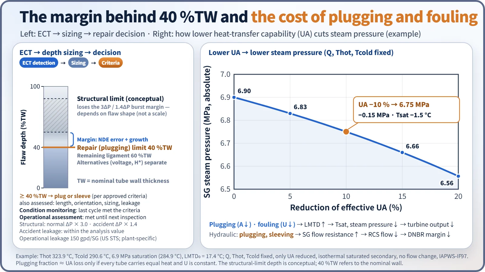
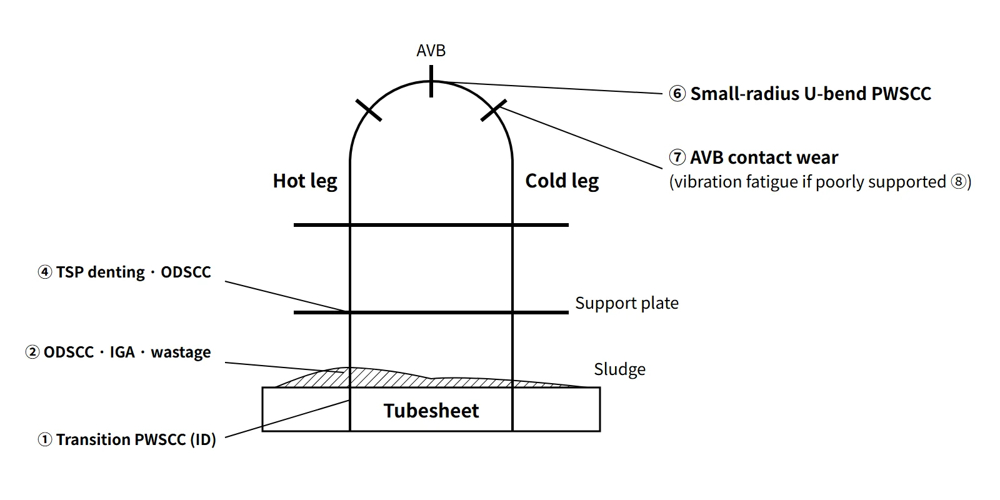

Fuel & Materials · C-FM-008
Steam Generator Tube Degradation — Mechanisms by Location, Material History, ECT and the 40 %TW Plugging Criterion
Which mechanism attacks which part of a U-tube, how inspections and the 40 %TW criterion manage them, and what plugging and fouling cost in steam pressure.
Steam generator tube degradation is the loss of wall integrity of the thin tubes that form the primary–secondary pressure boundary through stress corrosion cracking, intergranular attack, wastage, pitting, denting, wear and fatigue; it is the precursor of primary-to-secondary leakage and of steam generator tube rupture (SGTR).
The tubes separate the primary coolant (about 15.5 MPa) from the secondary side (about 6–7 MPa) and are part of the reactor coolant pressure boundary. By area they make up most of the pressure boundary, yet their wall is only about 1 mm thick (e.g. 19.05 mm outer diameter, 1.07 mm wall).
Principle and mechanism
Location, material and environment decide the mechanism
Even at the same location the mechanism depends on material, residual stress and water-chemistry history. The assignments below are typical locations.
Primary-side (inside-diameter) mechanisms
- PWSCC (primary water stress corrosion cracking): occurs where a susceptible material such as Alloy 600MA, high residual tensile stress and high temperature coincide. Typical locations are the tubesheet expansion (roll) transitions, small-radius U-bends (rows 1–2) and dented regions, with the hotter hot-leg side dominating.
Secondary-side (outside-diameter) mechanisms
- ODSCC and IGA: in the sludge pile on top of the tubesheet (TTS) and in tube support plate (TSP) crevices, impurities such as Na, sulfates and Pb concentrate by boiling and create locally strongly alkaline or acidic environments. Cracks run along grain boundaries (ODSCC) or the grain boundaries are attacked uniformly (IGA).
- Wastage: in the early 1970s, under phosphate treatment, acidic phosphates concentrated in the hot-leg sludge region and thinned the wall. It dropped sharply after the switch to AVT (all-volatile treatment).
- Denting: when drilled-hole carbon-steel support plates corrode in the crevice, the volume expansion of magnetite squeezes the tube. Chloride and oxygen ingress accelerate it. Residual stress at the dented region in turn invites PWSCC, and the changed support condition can also lead to fatigue.
- Pitting: under the sludge pile on the cold-leg side, copper oxides, chlorides and oxygen cause localized corrosion.
Mechanical mechanisms
- Fretting and wear: flow-induced vibration rubs the tubes against the U-bend anti-vibration bars (AVBs) and support plates, wearing the outer surface.
- High-cycle fatigue: if support is missing (AVB not inserted) or the tube is locked by denting, fluid-elastic instability develops. The ruptures at North Anna Unit 1 (1987) and Mihama Unit 2 (1991) were of this kind.
- Loose-part wear: foreign objects brought in during maintenance abrade peripheral tubes above the tubesheet. The Ginna rupture (1982) is the typical case.
![Elevation of one representative U-tube with hot and cold legs, tubesheet, support plates and anti-vibration bars, numbered ① to ⑧: expansion-transition PWSCC, sludge-pile ODSCC/IGA/wastage, loose-part wear at the periphery, lower support-plate denting and ODSCC, cold-leg sludge pitting, small-radius U-bend PWSCC, AVB fretting wear and upper support / U-bend fatigue; a cutaway photo of tubesheet, sludge and support plate, a tube-wall section showing ID-initiated PWSCC, OD-initiated ODSCC/IGA and a wear scar, a table of countermeasures, and the material sequence 600MA → 600TT → 690TT](../../assets/images/concepts/c-fm-008-sg-tube-degradation/fig1-degradation-location-map.webp)
The dominant mechanism changed over the decades
Wastage dominated in the early 1970s and denting in the mid-to-late 1970s. In the 1980s and 1990s PWSCC and ODSCC/IGA of Alloy 600MA were the largest causes of damage. Since replacement with Alloy 690TT, corrosion cracking has nearly disappeared and wear remains the main cause.
| Material | Main composition | Characteristics |
|---|---|---|
| Alloy 600MA | Ni ≥ 72, Cr 14–17 % | Mill-annealed; susceptible to PWSCC and ODSCC |
| Alloy 600TT | Same | Heat-treated at about 700 °C → grain-boundary carbides, better resistance |
| Alloy 690TT | Ni ≥ 58, Cr 27–31 % | About twice the Cr plus grain-boundary carbides; replacement SGs and APR1400 |
| Alloy 800 | Fe-Ni-Cr | KWU designs, CANDU |
According to NRC NUREG-1841 (2007), of 577,070 Alloy 690TT tubes only 333 (0.06 %) had been plugged. No corrosion cracking was detected; about 65 % of the plugging was done before service, and among in-service causes, wear from supports and foreign objects was the largest at about 24 %. Still, as at San Onofre Units 2 and 3 (2012), where tube-to-tube wear in replacement SGs led to permanent shutdown, 690TT does not mean freedom from degradation.
What it means in a plant
Inspection — eddy current testing (ECT) is the workhorse
During refueling outages, probes are pushed into the tubes from the primary-side channel head.
- Bobbin coil: fast screening of the full length. Effective for axial cracks, wear, wastage and dents, but insensitive to circumferential cracks.
- Rotating coils (MRPC, +Point): detailed examination of tubesheet transitions, U-bends and dents. They resolve crack orientation and size, but slowly.
- Array probes: many coils in an array give near-rotating-coil sensitivity at high speed.
- Supplements: ultrasonic testing (UT) for depth, profilometry for dent geometry. Suspect tubes are checked against the 3ΔP and leakage criteria directly by in-situ pressure testing.
The assessment has two stages: condition monitoring (CM, whether the flaws found met the criteria during the last cycle) and operational assessment (OA, a prediction that they will still be met at the next inspection).
Repair — plugging and sleeving
- Plugging: both ends are closed with mechanical roll, explosive or welded plugs, removing the tube from service. Because Alloy 600 plugs themselves suffered PWSCC, Alloy 690 plugs are used today.
- Sleeving: a sleeve is inserted inside the defect region and welded or expanded. The tube stays in service, so the loss of heat transfer is smaller than with plugging.
- Other options are Ni electroplating and stabilizers that prevent vibration of a severed tube.
What more plugging does to the system
Plugging reduces the heat-transfer area A, and secondary-side fouling (magnetite deposits) reduces the overall heat-transfer coefficient U. To pass the same heat, LMTD must rise in Q = U·A·LMTD. If the primary temperatures are held, the secondary saturation temperature and steam pressure fall and turbine output drops. Conversely, keeping steam pressure requires a higher Tavg, which is bad for PWSCC and DNBR.
As an example, take Thot 323.9 °C, Tcold 290.6 °C and steam at 6.9 MPa (saturation 284.9 °C). The LMTD is then 17.4 °C. A 10 % loss of UA lowers the steam pressure to 6.75 MPa, about 0.15 MPa lower, and a 20 % loss to 6.56 MPa. Plugging and sleeving also increase the SG flow resistance and reduce RCS flow, which cuts DNBR margin and raises Thot. Safety analyses therefore assume a plugging fraction (e.g. 8 %); exceeding it requires reanalysis or SG replacement. When deposits block the support-plate flow holes, water-level oscillations and a lower circulation ratio also appear.

Prevention — what can be done without design changes
- Secondary water chemistry (plant-specific chemistry programs): AVT (amines such as ammonia, morpholine and ETA, with hydrazine for oxygen scavenging), control of condenser leakage and Na, Cl and SO₄, molar ratio control (MRC) to keep crevice pH near neutral, and boric acid treatment to mitigate denting and IGA.
- Sludge management: sludge lancing, chemical cleaning, dispersant injection, increased blowdown.
- Operation and maintenance: reduced-Thot operation (assuming Q ≈ 50 kcal/mol, lowering Thot by 10 °C roughly halves the PWSCC initiation rate), stress relief by shot peening or roto-peening, foreign-material exclusion (FME, FOSAR), preventive plugging.
Hardware improvements and SG replacement
When hardware is changed, the measures are: Alloy 690TT tubes; stainless steel type 405 broached (quatrefoil) or egg-crate supports; full-depth hydraulic expansion in the tubesheet to eliminate the crevice; improved AVBs; titanium condenser tubes, removal of copper alloys from the feedwater system and condensate polishers. When degradation is extensive, the steam generator itself is replaced.
Regulatory and design criteria
The items below are US industry and NRC examples (NEI and EPRI guidelines, NRC Standard Technical Specifications and guidance).
| Basis | Key point |
|---|---|
| NEI 97-06 (1997), EPRI SG guidelines | SG program: performance criteria, CM and OA, inspection, chemistry and foreign-material control |
| NRC STS 5.5.9 (TSTF-449 Rev. 4, 2005) | Structural: burst margin of 3.0 × normal ΔP and 1.4 × accident ΔP / accident-induced leakage: within the analysis assumption |
| STS LCO 3.4.13 | Operational leakage: 150 gpd per SG |
| RG 1.121 (1976) | Basis of the depth criterion: a traditional depth-based repair limit with allowances for measurement uncertainty and growth below the structural limit (generally 40 %TW, not a universal formula) |
| GL 95-05, H* | Alternative repair criteria: voltage-based criteria for TSP ODSCC, inspection extent within the tubesheet |
| TSTF-510 (2011) → TSTF-577 | Material-based extension of inspection intervals → intervals based on crack history and probes |
Early SG programs relied essentially on the 40 % depth criterion; since NEI 97-06 was introduced, the three performance criteria (structural, accident-induced leakage, operational leakage) and the CM/OA framework have become standard. With 690TT replacement, the dominant mechanism has also moved from corrosion cracking to wear.
Easily confused pairs
| 40 %TW plugging criterion | Allowable plugging fraction | Structural limit depth | |
|---|---|---|---|
| Object | Flaw depth in one tube | Ratio to all tubes in the SG | One tube |
| Meaning | Repair decision line | Safety-analysis assumption (e.g. 8 %) | Depth at which the 3ΔP burst margin is lost |
| Basis | Technical specifications, RG 1.121 | FSAR analysis | Calculated per flaw geometry and material |
PWSCC and ODSCC are also often mixed up. Both are stress corrosion cracking, but PWSCC starts on the inner surface wetted by primary coolant, and ODSCC in outer-surface crevices where impurities concentrate. Their countermeasures differ too: material, temperature and stress for the first; water chemistry and sludge for the second.
Key points at a glance
- Definition: corrosion and mechanical damage of the tubes (wall about 1 mm) of the primary–secondary pressure boundary → precursor of leakage and SGTR.
- Primary side: PWSCC — tubesheet transitions, small-radius U-bends, dents (600MA, residual stress, high temperature).
- Secondary side: ODSCC/IGA (impurity concentration in sludge and support-plate crevices), wastage (phosphate), denting (carbon-steel support corrosion), pitting (cold-leg sludge).
- Mechanical: fretting wear at AVBs and supports, high-cycle fatigue (FEI), loose-part wear.
- Materials: 600MA → 600TT → 690TT (Cr 27–31 %); with 690TT, wear dominates.
- Inspection: ECT (bobbin screening, rotating coil detail, array), UT, in-situ pressure test, CM and OA.
- Criteria: 3ΔP and 1.4ΔP structural, operational leakage 150 gpd per SG, plug or sleeve at ≥ 40 %TW depth.
- Prevention: AVT and ETA, MRC, boric acid treatment, sludge lancing, reduced Thot, peening, FME.
- Hardware: 690TT, quatrefoil stainless supports, full-depth expansion, copper removal, SG replacement.
- Effects: plugging and fouling → lower UA → lower steam pressure and output; lower RCS flow → less DNBR margin.
